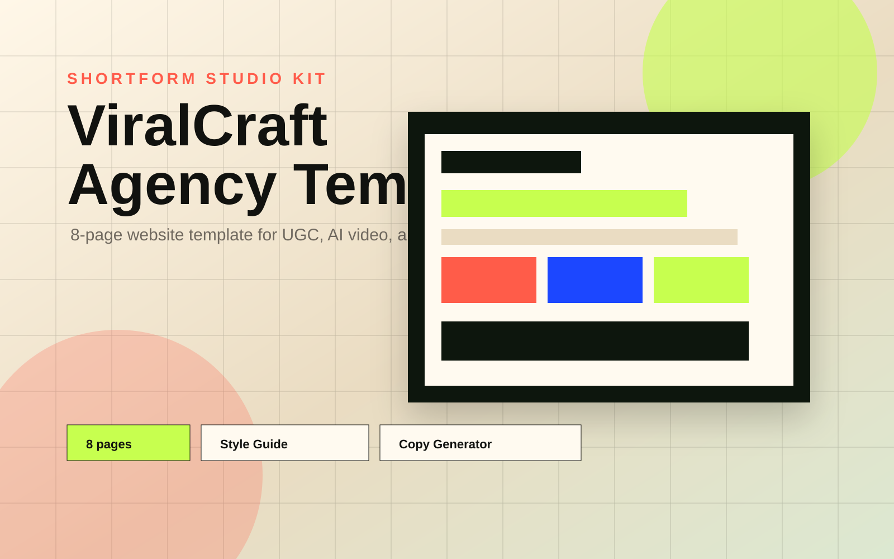
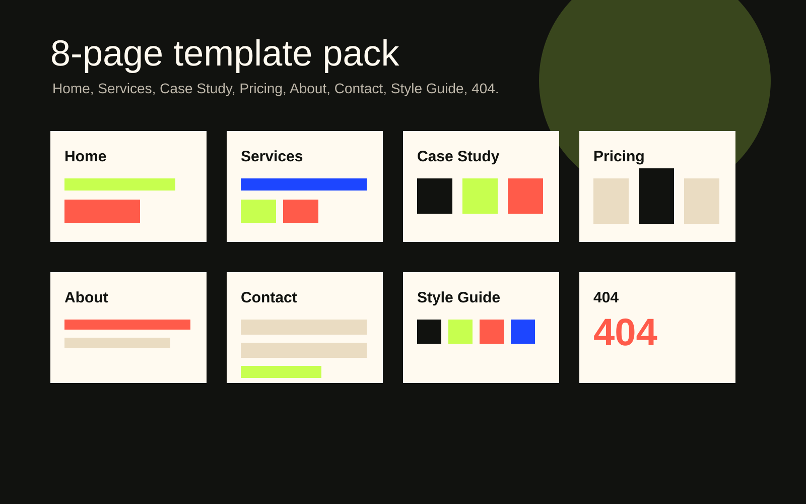
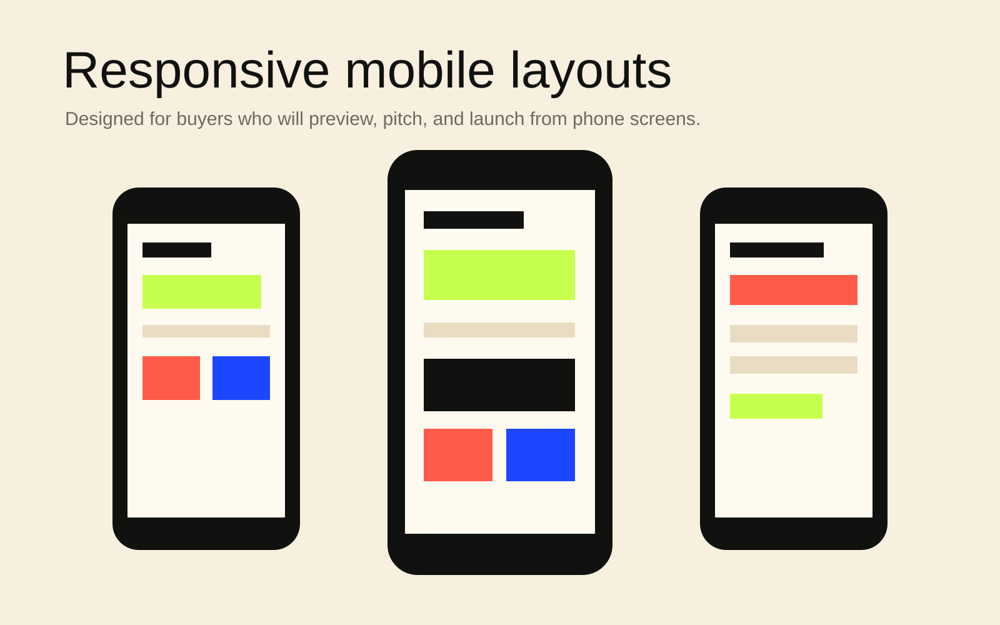
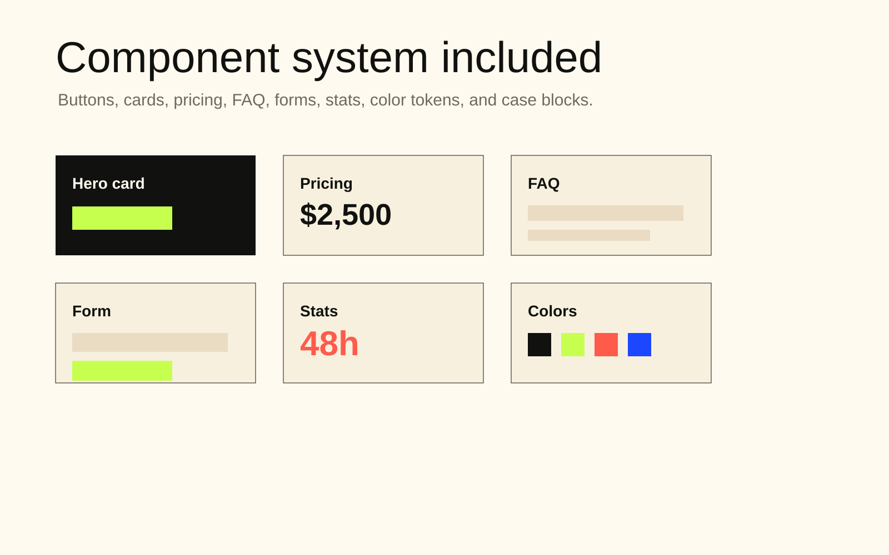
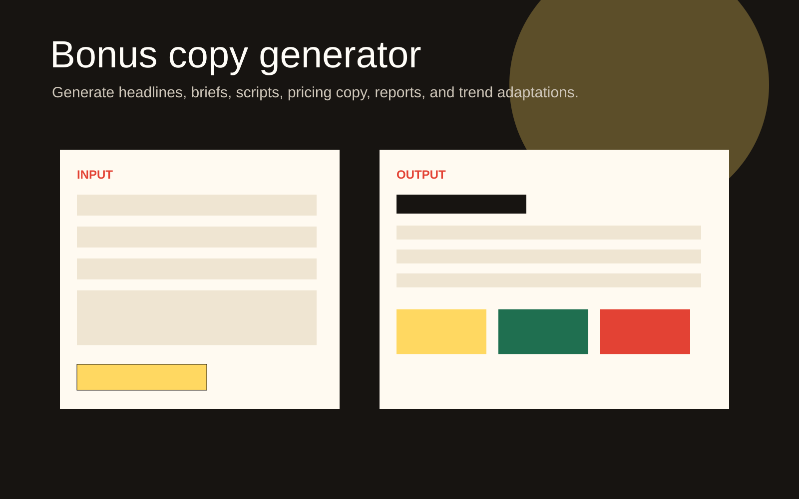

ShortForm Content OS
A repeatable content workflow for creators, small brands, content teams, and agencies. Build a Brand Brain, create content projects, save what survives review, record results, and reuse the learning in the next draft.
Live proof
Let buyers try the product before checkout.
The strongest preview path is interactive demo first, then full workspace, then live template.
01Interactive DemoGenerate a structured content project from Brand context.
02Full WorkspaceBrand Brain, Content Studio, Library, Learning, exports, and optional Agency tools.
03Live TemplateDifferent structures for SaaS, creator, local, premium UGC, and general agency buyers.
04Case LibraryThree complete fictional examples from brief to renewal.
What buyers get
A concrete package that can be uploaded to a marketplace.
A lightweight page where buyers enter client, niche, goal, and constraint to see instant output.
Brand Brain, Content Studio, Content Library, Learning, local saving, and optional Agency operations for approvals, reports, and efficiency.
Brief Quality Score, Template Fit Engine, and Reject Generic Output checker help users avoid sending weak client work.
Standalone website HTML, Markdown project pack, renewal report, and advisor report export.
A top-level static website template for UGC, AI video, and short-form agencies.
Harbor Coffee, NovaClips AI, and GlowBar Studio examples with brief, diagnosis, generated pack, test, and renewal logic.
Listing copy, pricing ladder, FAQ, refund policy, license notes, and gallery assets.
Pricing ladder
Use three tiers so buyers self-select by seriousness.
Creator
$29For one Brand, local memory, and a repeatable first content loop.
- Live template
- Interactive demo
- Case library
- Basic documentation
Studio
$79For multiple Brands, Content Library, Learning, exports, and a deeper weekly workflow.
- Everything in Starter
- Full workspace
- Saved projects and profiles
- HTML, Markdown, report exports
Agency
$149For client approvals, efficiency tracking, reports, and renewal workflow.
- Future Framer/Webflow version
- Advanced playbooks
- More case studies
- Priority update access
Positioning
Why this is more defensible than a prompt pack.
Client context persists.
Brand Brain, red lines, audience memory, competitors, and learning are stored in one workflow.
Outputs are constrained.
The OS tells users when to collect proof, clarify the offer, or avoid selling a full retainer.
Output becomes handoff.
Buyers can export website HTML, Markdown packs, and advisor reports for client delivery.
Use cases are packaged.
The case library helps buyers understand how to sell and deliver the workflow.
Gallery assets
Marketplace-ready images for your product listing.
Use these as Gumroad/Lemon Squeezy gallery images, then replace with higher-fidelity screenshots after first feedback.





FAQ
Answers buyers need before checkout.
No. It is a static product kit with browser-based tools. No login, backend, or API key is required.
No. This version is static HTML/CSS/JS. A future Framer/Webflow version can become the premium tier.
Yes, for their own business or client delivery. They cannot resell the original package as a competing template product.
No. The current version is deterministic and runs in the browser. That keeps cost and setup risk low.
Brand name, proof, case claims, pricing, checkout links, contact links, and any sample copy.
Because this is a digital download, offer refunds only for duplicate purchases or technical file access issues.